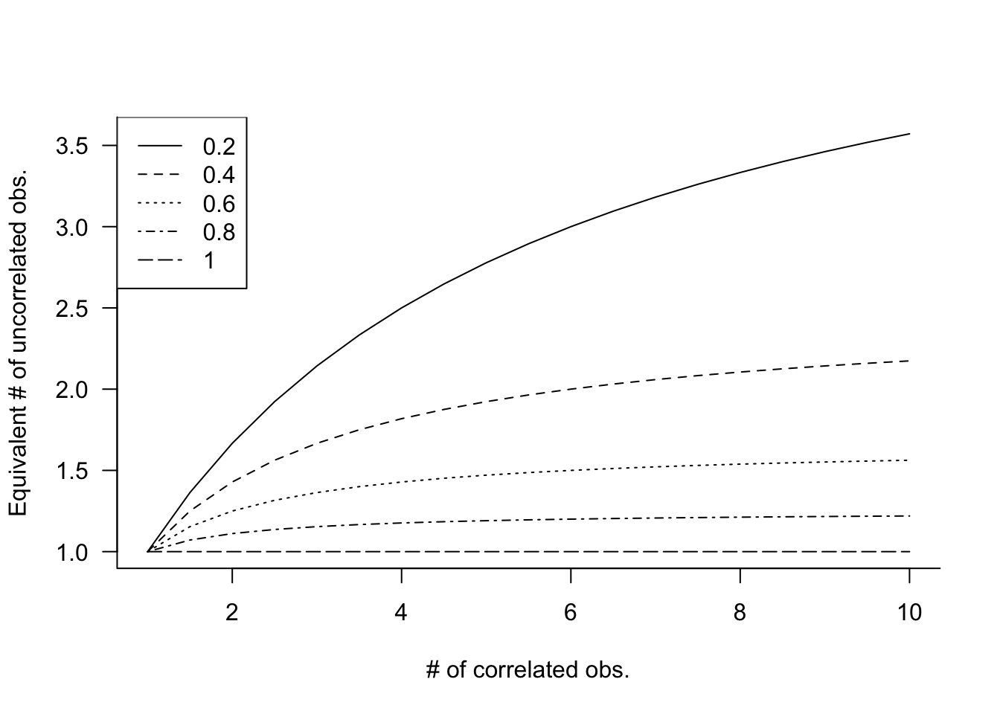

{kind=link}
{kind=link}
{kind=link}
library("duckdb")
con <- dbConnect(duckdb(),dbdir = "ads.ddb",read_only=TRUE)
apples <- dbGetQuery(con, "SELECT * FROM apples")
dbDisconnect(con)29 Correlated Data
29.1 Introduction
Throughout much of the previous chapters we have encountered correlation in various forms and scenarios. For example,
A common assumptions about the model errors is that they are not correlated. The homoscedastic (equi-variance) and uncorrelated situation, often called the iid case, is characterized by \(\text{Var}[\boldsymbol{\epsilon}] = \sigma^2 \textbf{I}\).
The correlation between a target \(Y\) and an input \(X\) is a measure of their linear dependency.
The \(R^2\) statistic in linear models is the square of the correlation coefficient between \(Y\) and \(\widehat{Y}\).
Principal component analysis (Chapter 23) constructs uncorrelated linear projections of the input variables.
Correlation does not imply causation.
Random variables that are independent are also uncorrelated. The reverse is not generally true, but it is true for Gaussian random variables (Section 3.7).
The covariance/correlation structure between inputs is explicitly modeled in model-based clustering (Chapter 25).
Multicollinearity is a broader concept than pairwise correlations. In the presence of weak pairwise correlations you can have strong multicollinearity (Section 7.4.4).
Correlation is typically a good thing, it indicates relationships and patterns that we want to find. Correlations among the target values has so far been largely ignored or brushed aside by assuming that model errors are uncorrelated. We know that this assumption is not always correct.
Suppose we are to collect data from individuals in the state of Virginia. The sampling is carried out in two stages to make sure that counties and individuals within counties are represented. First, we draw at random twenty entities from the 95 counties and 39 independent cities in the state. Then, in each of the twenty selected cities or counties, we sample 100 residents. If \(\tau_i\) denotes the effect of the \(i\)th city/county and \(e_{ij}\) the effect of the \(j\)th resident sampled within the city/county \(i\), then a model for the overall mean attribute is \[ Y_{ij} = \mu + \tau_i + e_{ij} \]
Because we sampled at the stage of the city/county and at the stage of residents, the \(\tau_i\) and the \(e_{ij}\) are random variables. If there are no systematic effects, their basic stochastic properties are \(\tau_i \sim (0,\sigma^2_\tau)\), \(e_{ij} \sim (0,\sigma^2_e)\).
This is an example of a hierarchical sampling scheme, we select one sample within the draws of another sample. What does this hierarchy of random variables have to do with correlated data? To answer this, consider two covariances:
- between observations from different cities/counties
- between observations from the same city/county
The former is \[\begin{align*} \text{Cov}[Y_{ij},Y_{kl}] &= \text{Cov}[\mu + \tau_i + e_{ij},\mu + \tau_k + e_{kl}] \\ &= \text{Cov}[\tau_i + e_{ij},\tau_k + e_{kl}] \\ &= \text{Cov}[\tau_i,\tau_k] + \text{Cov}[\tau_i,e_{kl}] + \text{Cov}[e_{ij},\tau_k] + \text{Cov}[e_{ij},e_{kl}] \\ &= 0 + 0 + 0 + 0 \\ &= 0 \end{align*}\]
The covariance between two observations from the same city/county, on the other hand, is \[\begin{align*} \text{Cov}[Y_{ij},Y_{il}] &= \text{Cov}[\mu + \tau_i + e_{ij},\mu + \tau_i + e_{il}] \\ &= \text{Cov}[\tau_i + e_{ij},\tau_i + e_{il}] \\ &= \text{Cov}[\tau_i,\tau_i] + \text{Cov}[\tau_i,e_{il}] + \text{Cov}[e_{ij},\tau_i] + \text{Cov}[e_{ij},e_{il}] \\ &= \sigma^2_\tau + 0 + 0 + 0 \\ &= \sigma^2_\tau \end{align*}\]
Two observations from the same city/county share the random effect \(\tau_i\); this sharing induces a correlation. Notice that if the \(\tau_i\) were fixed effects, rather than random variables, there would be no induced correlation. That would be the case if samples were taken from all cities/counties in Virginia.
Shared random effects due to random sampling is one mechanism that creates correlations among observations. Figure 29.1 displays other ways in which correlations can come about.
Hierarchical random processes can also at work when treatments are assigned to experimental units. A common experimental design in agricultural application is the split-plot design in which two different treatment factors are deployed on experimental units of different size (Figure 29.2). One factor might be a soil treatment that requires large areas for its application. Another factor might be four variants of a crop species that can be planted on smaller areas than the soil treatment. A split-plot design assigns soil treatments to large experimental units and assigns the four crop variants to small experimental units within each of the large units.
A natural mechanism through which correlations occur is the observation of a stochastic process in time or space. In the subsampling example above, correlation is induced because two observations share something: they were sampled from the same city or county.
An extreme version of sharing is when the same entity is measured repeatedly. Suppose you measure the length of an item at time \(t\) and immediately afterwards. The two measurements will be very similar, due to measurement errors they might not be identical. If \(\epsilon\) is the small time interval between the two measurements, then we expect \(Y(t)\) and \(Y(t+\epsilon)\) to be highly correlated. If \(Y\) is the length of an inanimate object, an iron rod, say, then we actually expect the correlation to be very high over long time intervals, since \(Y\) is essentially invariable. If \(Y\) is an attribute subject to change, then we expect the correlation between \(Y(t)\) and \(Y(t+\delta)\) to somehow be a function of the time difference \(\delta\). The delay times of trains at the station are more highly correlated between now and ten minutes from now than between now and six months from now.
This type of correlation, of a random variable with itself, is called autocorrelation.
Hierarchical random processes and autocorrelated processes create clustered data structures. We need to distinguish the use of “cluster” in this context from the cluster analyses in Chapter 24. What they have in common is that a cluster is a group of observations that have something in common. In cluster analysis the commonality is similarity of attribute values; the number and size of the clusters is not known a priori, finding the clusters is the goal of the analysis.
In the context of correlated data the clusters are defined through the process in which the data are collected; observations from the same cluster are correlated and observations from different clusters are (typically) uncorrelated (Figure 29.3). A longitudinal study where \(i=1,\cdots,k\) subjects are measured \(j=1,\cdot n_i\) times, creates a clustered data structure with \(k\) clusters of sizes \(n_1,\cdots,n_k\). Cluster membership is known a priori and not subject to analysis.
Multiple causes for clustering can occur in the same study. For example, one might have a hierarchical sampling scheme and the elements drawn into the subsample are then measured repeatedly over time. The apple data which we introduce here and revisit throughout this and the following chapter are an example of such a data structure.
Example: Apple Diameters
The data for this analysis were collected at the Winchester Agricultural Experiment Station of Virginia Tech and are analyzed in (Schabenberger and Pierce 2001, 466–74). Ten apple trees were randomly selected at the experiment station and 25 apples were randomly chosen on each tree. The data analyzed here comprise only the apples in the largest size class, those apples with an initial diameter equal or greater than 2.75 inches. Over a period of 12 weeks diameter measurements of the apples were taken at 2-week intervals. The variables in the data set are
Tree: the tree numberappleid: the number of the apple within the tree. Note that the sameappleidcan appear on multiple trees and only apples in the largest diameter size class appear in the data set.measurement: the index of the measurements. Measurements are taken in two-week intervals, so thatmeasurement=1refers to the state of the apple after 2 weeks andmeasurement=6refers to the state of the apple at the end of the 12-week perioddiameterthe diameter of the apple at the time of measurement
Figure 29.4 displays the diameter measurements on each tree. The data are longitudinal, each apple is measured one or more time during the 12-week period. The data also exhibit a subsampling structure: trees were randomly selected in the orchard and apples were randomly selected on each tree. There is clustering at two levels:
- apples are clustered within trees due to subsampling
- longitudinal measurements are creating a temporal cluster for each apple.
library(lattice)
xyplot(diameter ~ measurement | Tree,
data=apples,
strip = function(...) {
strip.default(...,
strip.names =c(T,T),
strip.levels=c(T,T),
sep=" ")
},
xlab="Measurement index",
ylab="Diameter (inches)",
type=c("p"),
as.table=TRUE,
layout=c(4,3,1)){kind=link}
29.2 Autocorrelation
As the name suggests, autocorrelation is the correlation of a random variable with itself. Rather than investigating the relationship between two different attributes, say \(Y\), the weight of an animal, and \(X\), the age of the animal, we are studying the behavior of the animal’s weight over time. Instead of \(\text{Corr}[Y,X]\), we are interested in \(\text{Corr}[Y(t),Y(t+\delta)]\).
In time series analysis this type of correlation is also called serial correlation or temporal correlation. In the analysis of data in a spatial context it is referred to as spatial correlation. In longitudinal studies we encounter autocorrelation when the same entity is measured more than once; a typical example is taking repeated health measurements on patients in a study. When this occurs in the context of a designed experiment, the data are also referred to as repeated measures.
Autocorrelation is typically positive. Observations of an attribute that are close temporally or spatially are similar to each other. As the temporal or spatial separation increases, the correlation tends to decline. This evolution of the correlation over time or space is captured by the autocorrelation function.
Example: Autocorrelation of Apple Share Price
Figure 29.5 displays the weekly closing share price for Apple stock (ticker symbol AAPL) between 2010 and 2023. This is a time series \(Y(t)\), where \(Y\) represents the close price and \(t\) is the point in time that marks the end of a particular week. A longer version of this time series was analyzed in #sec-smoothing-splines.
library(lubridate)
library("duckdb")
con <- dbConnect(duckdb(),dbdir = "ads.ddb",read_only=TRUE)
weekly <- dbGetQuery(con, "SELECT * FROM AAPLWeekly")
weekly$date <- make_date(weekly$year,weekly$month,weekly$day)
dbDisconnect(con)
weekly_2010 <- subset(weekly,(weekly$year >= 2010) & (weekly$year <= 2023)){kind=link}
Although the share price goes up and down, there is positive autocorrelation between the prices, \(\text{Corr}[Y(t),Y(t+\delta)] > 0\). Figure 29.6 displays the empirical estimates of the autocorrelation for lags ranging from 1 to 20.
library(tseries)
par(mar=c(5,5,2,2))
autocorr <- acf(weekly_2010$Close,lag.max=20,main="",las=1){kind=link}
knitr::kable(data.frame(lag=autocorr$lag,acf=autocorr$acf),align="l",format="simple")| lag | acf |
|---|---|
| 0 | 1.0000000 |
| 1 | 0.9939698 |
| 2 | 0.9878988 |
| 3 | 0.9815283 |
| 4 | 0.9750561 |
| 5 | 0.9689264 |
| 6 | 0.9627808 |
| 7 | 0.9568324 |
| 8 | 0.9512378 |
| 9 | 0.9464483 |
| 10 | 0.9422454 |
| 11 | 0.9377848 |
| 12 | 0.9327817 |
| 13 | 0.9280758 |
| 14 | 0.9237923 |
| 15 | 0.9192121 |
| 16 | 0.9144181 |
| 17 | 0.9093639 |
| 18 | 0.9034697 |
| 19 | 0.8981824 |
| 20 | 0.8933590 |
The estimate of the autocorrelation at lag 1, \(\widehat{\text{Corr}}[Y(t),Y(t+1)]\) = 0.994. The correlation between two share prices twenty weeks apart is lower but still pretty high: \(\widehat{\text{Corr}}[Y(t),Y(t+20)]\) = 0.8934. (The first entry of the autocorrelation results corresponds to lag=0).
The calculation of the autocorrelation estimates in this example reveals that we think of the autocorrelation as a function of the distance between data points, the lag as measured in weeks. We do not think of it as a function of \(t\) itself. In other words, the correlation between two share prices \(k\) weeks apart is the same, whether the first date is in 2010, in 2015, or in 2023. It does not depend on the origin of time. This is a typical assumption in the analysis of stochastic processes, called stationarity. Before we explore stationarity properties further in Section 29.2.2, let’s spend a bit of time on what it means for data analytics if the data are autocorrelated.
Consequences of Autocorrelation
Is autocorrelation good or bad? Does it matter if the data are autocorrelated? In a sense, autocorrelation is neither good nor bad, it just is what it is. It is unavoidable if we measure the same attribute in temporal or spatial proximity. Soil samples taken close to each other will be more similar than soil samples taken far apart. They will be spatially correlated and more so the closer they are.
If you want to assess the growth in market capitalization of a company, you study their books at the beginning and at the end of the fiscal year. You could also take the difference between the average market cap of a random sample of companies taken at the beginning of the year and the average market cap of a random sample of companies taken at the end of the fiscal year. If the random samples are representative of our target company, this difference is an unbiased estimate of the growth–and a horrible estimate at that. If you want to measure change, measure the entity that changes! The result will be correlated observations.
The more interesting question to ask is what happens if data are autocorrelated and we do not take this into account in the analysis? The kind of thing we did in Section 11.3.4 when the AAPL share price data was analyzed with smoothing splines under an iid assumption.
To demonstrate the effect of ignoring correlation, we look at a special case, the equi-correlation model, also called the compound symmetry model of correlation. Under this correlation structure, all observations have the same correlation.
Suppose that \(Y(t_1), \cdots, Y(t_n)\) is a sequence of autocorrelated observations with common mean \(\mu\) and variance \(\sigma^2\). The (auto-)covariance is given by \[ \text{Cov}[Y(t_i),Y(t_j)] = \left \{ \begin{array}{ll} \sigma^2\rho & i \neq j \\ \sigma^2 & i=j \end{array} \right . \] and the autocorrelation is \(\text{Corr}[Y(t_i),Y(t_j)] = \rho\). Now suppose we estimate the mean \(\mu\) of the sequence using the sample mean \[ \overline{Y} = \frac{1}{n}\sum_{i=1}^n Y(t_i) \] What is the variance of \(\overline{Y}\)? It is probably not \(\sigma^2/n\), the variance of \(\overline{Y}\) if the \(Y(t_i)\) are uncorrelated.
\[ \begin{align*} \text{Var}[\overline{Y}] &= \frac{1}{n^2} \text{Var}\left [ \sum_{i=1}^n Y(t_i) \right ] = \frac{1}{n^2} \sum_{i=1}^n\sum_{j=1}^n\text{Cov}[Y(t_i),Y(t_j)] \\ &= \frac{1}{n^2}\left \{ \sum_{i=1}^n\text{Var}[Y(t_i)] + \sum_{i=1}^n\sum_{j \neq i}^n \text{Cov}[Y(t_i),Y(t_j)]\right \} \\ &= \frac{1}{n^2}\left \{ n\sigma^2 + n(n-1)\sigma^2\rho \right \} \\ \\ &= \frac{\sigma^2}{n} \left \{ 1 + (n-1)\rho \right \} \end{align*} \tag{29.1}\]
This is a very interesting result: \(\text{Var}[\overline{Y}] = \{1+(n-1)\}\rho \sigma^2/n\). The variance of the sample mean of the equi-correlated observations is \(\{1+(n-1)\rho\}\) times the variance of the sample mean of uncorrelated observations. Since autocorrelation is typically positive, we have \[ \text{Var}[\overline{Y}] > \frac{\sigma^2}{n} \]
If you analyze data as if they were independent (uncorrelated), when in fact they exhibit positive autocorrelation, the estimates of the variability of the statistics are too small. By pretending that the data are uncorrelated we are pretending that the statistics are more precise than they really are. As a consequence, standard error estimates and \(p\)-values are too small, confidence and prediction intervals are too narrow.
Note that \(\overline{Y}\) is not an unreasonable estimator of \(\mu\) here. It is after all an unbiased estimator, \[ \text{E}[\overline{Y}] = \frac{1}{n}\text{E}[\sum_{i=1}^n Y(t_i)] = \frac{1}{n}\sum_{i=1}^n\text{E}[Y(t_i)] = \frac{1}{n}\sum_{i=1}^n\mu = \mu \] Can we attach some intuition to the fact that ignoring positive autocorrelation leads to inflated statements of precision (underflated statements of variability)? The concept of the effective sample size helps: what is the equivalent number \(n^\prime\) of independent observations that leads to the same precision as \(n\) observations of the correlated kind? Based on the derivation above, for the compound symmetry model this number is \[ n^\prime = \frac{n}{1+(n-1)\rho} \]
Figure 29.7 displays the effective sample size under compound symmetry for various values of \(n\) and \(\rho\).

This is quite sobering. If you collect 10 observations with \(\rho = 0.4\), their sample mean will be as precise as the sample mean of 10/(1+9*0.4) = 2.17 uncorrelated observations! It seems like we are losing a lot of information. In the extreme situation where \(\rho = 1\), the effective sample size is \(n^\prime = 1\). How do we make sense of that?
If the observations are perfectly correlated, then \(Y(t_1) = Y(t_2) = \cdots = Y(t_n)\) and there is no variability. Once you observe one data point, you have all the information you could possibly gather. Collecting more data does not add more information in this situation. Another way to look at it: if \(\sigma^2 = 0\), then it does not matter what the denominator is in \(\sigma^2/n\). The sample mean will have zero variance because the observations have zero variance.
In practice, the effective sample size reduction is not quite as harsh as in the compound symmetry example because autocorrelations diminish with increasing separation of data points. We chose the compound symmetry model since the calculation of the variance in Equation 29.1 is relatively straightforward.
Stationary Random Processes
A stochastic process is called stationary if it is self-replicating, it looks similar in different parts of the domain \(D\). The domain \(D\) for a temporal process are points in time and for a spatial process the domain consists of all possible spatial coordinates (latitudes and longitudes). For a spatial process the observations are indexed with a two-dimensional vector of coordinates, \(\textbf{s}= [x_1,x_2]\), for a temporal process the index is a scalar \(t\) and the processes themselves are expressed as \(Y(\textbf{s})\) and \(Y(t)\).
So what does it mean for \(Y(\textbf{s})\) to be self-replicating? \(Y(\textbf{s})\) and \(Y(\textbf{s}+\textbf{h})\) are random variables separated by the lag vector \(\textbf{h}\). As random variables they have a distribution, a mean, a variance, and so forth. Strict stationarity implies that the distribution is the same at all points, a condition more restrictive than what we need to make inferences about the random process. If we wish to estimate the covariance or correlation between two points of the process, then it would help if we can consider all pairs \((Y(\textbf{s}), Y(\textbf{s}+\textbf{h}))\) to construct an estimator. But in order to do so, it must be true that \[ (Y(\textbf{s}_1), Y(\textbf{s}_1+\textbf{h})) \] and \[ (Y(\textbf{s}_2), Y(\textbf{s}_2+\textbf{h})) \] contribute the same information to the estimation. If that assumption does not hold, the autocorrelation function will not just be a function of \(\textbf{h}\), but it will depend on the location itself.
Less restrictive than strict stationarity—but a sufficiently strong condition for our purposes—second-order stationarity of a stochastic process implies that \[ \begin{align*} \text{E}[Y(\textbf{s})] &= \mu \\ \text{Cov}[Y(\textbf{s}),Y(\textbf{s}+\textbf{h})] &= C(\textbf{h}) \end{align*} \] The first property states that the mean is constant and does not depend on location. The second property states that the covariance function is a function of the lag \(\textbf{h}\) but not of the location \(\textbf{s}\). In a second-order stationary random process absolute coordinates do not matter, the origin does not matter. For a time series that means you can talk about a difference of two days without worrying whether the first day was a Sunday or a Thursday.
Stationarity assumptions are important in the analysis of correlated data. You can say that the iid assumption has been replaced with a second-order stationarity assumption. The assumption of a constant mean seems more restrictive than the existence of a covariance function invariant to location. How can we apply these assumptions to modeling the AAPL share prices?
The statistical models entertained so far have focused on modeling the mean structure, \[ Y = f(x_1,x_2, \cdots,x_p,\theta_1,\cdots,\theta_k) + \epsilon \] but implicitly we also modeled the random structure of \(\epsilon\). Assuming that \(\epsilon \textit{ iid } (0,\sigma^2)\) is placing a model on the variance-covariance structure on the model errors. Modeling correlated data applies the same ideas. The changes in the mean of the target are captured by \(f(x_1,x_2, \cdots,x_p,\theta_1,\cdots,\theta_k)\). The model errors are assumed to follow a second-order stationarity process with some covariance function. The assumption of a constant (zero) mean for \(\epsilon\) makes sense in this situation as much as it makes sense in the iid case.
Autocorrelation Functions
The autocorrelation function (or correlation function, for short) expresses the evolution of the correlation with increasing spatial or temporal separation of the observations. How does it relate to the covariance function \(C(\textbf{h})\) or \(C(t)\) of a second-order stationary process mentioned in the previous section?
Let’s look at observations measured at times $t_1, , t_n. The covariance between observations at time \(t_i\) and \(t_j\) is \[ \text{Cov}[Y(t_i),Y(t_j)] = \text{E}[Y(t_i)Y(t_j)] - \text{E}[Y(t_i)]\text{E}[Y(t_j)] \] This is simply the definition of a covariance. If \(Y(t)\) is second-order stationary, then the means are the same and the covariance is only a function of \(|t_i - t_j|\) but not of the absolute values \(t_i\) or \(t_j\). The autocovariance function is \[ \text{Cov}[Y(t_i),Y(t_j)] = C(|t_i - t_j|) \] When \(t_i = t_j\), at lag 0, this function is the variance of \(Y(t)\): \[ C(0) = \text{Cov}[Y(t_i),Y(t_i)] = \text{Var}[Y(t_i)] \] Note that second-order stationarity implies the absence of an origin, if \(C(h)\) does not depend on absolute coordinates \(C(0)\) does not depend on absolute coordinates. The second-order stationary process has constant mean and constant variance.
Definition: Autocorrelation Function
The autocorrelation function at lag \(h\) of a second-order stationary process is the ratio of the autocovariances at lag \(h\) and at lag \(0\) \[ R(h) = \frac{C(h)}{C(0)} \]
Because of this relationship we can switch between the autocorrelation and the autocovariance function easily: \(C(h) = C(0)\times R(h)\) and models can be specified in terms of either function.
Models for autocorrelations parameterize \(R(h)\), usually in such a way that the correlations decay with increasing lag. Some common autocorelation models are the following:
First-order autoregressive (AR(1)) model \[R(h) = \rho^{|i-j|}\]
Continuous AR(1) (exponential) model \[R(h) = \rho^{h} = \exp\left \{ - h/\phi \right \}\]
Gaussian model \[R(h) = \exp\left \{ -h^2/\phi^2\right \}\]
Spherical model \[R(h) = \left \{ \begin{array}{ll} 1- \frac{3}{2}\left(\frac{h}{\phi} \right) + \frac{1}{2}\left( \frac{h}{\phi}\right)^3 & h \leq \phi \\ 0 & h > \phi \end{array} \right . \]
AR(1) Model
The name “AR(1) model” is a shorthand for the autoregressive model of first order, a basic model in the study of time series data. Let \(\{Y(t): t=\cdots,-1,0,1,\cdots\}\) be a time series of attribute \(Y\) observed at times \(t=\cdots,-1,0,1,\cdots\). The autoregressive series of first order is generated according to \[ Y(t) = \rho Y(t-1) + \epsilon(t) \] The \(\epsilon(t)\) are uncorrelated random variables with mean 0 and variance \(\sigma^2_e\), also called the random shocks or innovations of the time series process. The innovation at time \(t\) is not correlated with the past realizations, \(\text{Cov}[Y(t-s),\epsilon(t)] = 0, \forall s > 0\), and the \(Y(t)\) process has a constant mean \(\mu\). For \(\rho > 0\), the AR(1) process has runs of positive and negative residuals that vary about \(\mu\). The length of the runs increases with \(\rho\).
The recursive relationship built into the AR(1) model leads to a covariance model of the form \(C(h) = \rho C(h-1)\) and ultimately \(C(h) = \rho^h C(0)\). The autocorrelation function of the AR(1) process is \(R(h) = \rho^h\).
The AR(1) model specifies correlation in terms of the positions \(i\) and \(j\) of observations in the observed sequence. The lag \(h\) does not correspond to a difference in observation times in this model. When the observation times are equally spaced, this model is still appropriate and leads to a re-scaled estimate of \(\rho\) compared to the continuous AR(1) model. For equally-spaced measurements, the possible lags are \(|t_i - t_j| = c|i-j|\) for some factor \(c\). The correlation function of the AR(1) process is a step function, it does not decrease smoothly with \(h\). The correlation matrix of this process with 4 observations is \[ \left [\begin{matrix} 1 & \rho & \rho^2 & \rho^3 \\ \rho & 1 & \rho & \rho^2 \\ \rho^2 & \rho & 1 & \rho \\ \rho^3 & \rho^2 & \rho & 1 \end{matrix}\right] \] The same matrix for the continuous AR(1) model is \[ \left [\begin{matrix} 1 & \rho^{|t_1-t_2|} & \rho^{|t_1-t_3|} & \rho^{|t_1-t_4} \\ \rho^{|t_2-t_1|} & 1 & \rho^{|t_2-t_3|} & \rho^{|t_2-t_4|} \\ \rho^{|t_3-t_1|} & \rho^{|t_3-t_2|} & 1 & \rho^{|t_3-t_4|} \\ \rho^{|t_4-t_1|} & \rho^{|t_4-t_2|} & \rho^{|t_4-t_3|} & 1 \end{matrix}\right] \]
The continuous AR(1) model appears in two common parameterizations, \(\rho^h\) and \(\exp\{-h/\phi\}\). The former is convenient because \(0 \le \rho \le 1\) and has interpretation as a correlation coefficient. The second parameterization has nice numerical properties and you can easily convert between the two: \[ \begin{align*} \rho &= e^{-1/\phi} \\ \phi &= \frac{-1}{\log \rho} \end{align*} \] The “gaussian” model is not related to the Gaussian distribution, it gets its name from the term in the exponent that resembles (somewhat) the term in the Gaussian density. For a given value of \(\phi\), the exponential model decreases correlations initially more rapidly than the gaussian model but levels out sooner (Figure 29.8).
The spherical model is popular in the analysis of geospatial data. Unlike the exponential and the gaussian models, which do not reach \(R(h) = 0\), the spherical model has \(R(\phi) = 0\). The lag at which autocorrelations have become negligbile is called the range of the function. For the exponential and gaussian models the practical range is defined as the lag at which \(R(h) = 0.05\). Those values are \(3\phi\) and \(\sqrt{3}\phi\) for the exponential and gaussian models, respectively (Figure 29.8).
{kind=link}
29.3 Correlated Error Models
Setting up the Model
Correlated error models parameterize the variance-covariance matrix (covariance matrix, for short) of the model errors. In longitudinal, time series, or spatial applications, the autocorrelation or autocovariance functions are used to structure this matrix. Suppose the data are clustered, the index \(i\) denotes the cluster, and \(\textbf{Y}_i\) is the \((n_i \times 1)\) vector of target values for the \(i\)th cluster. Clusters can be of different sizes, and there can be one or more clusters. In spatial data applications and in time series analysis it is common to treat the entire geospatial data set as a single cluster: all observations are correlated. In longitudinal applications clusters typically refer to the subjects of the study; the apple data is an example of that.
If the basic model structure is that of a linear model, we can write the model for the \(i\)th cluster as \[ \begin{align*} \textbf{Y}_i &= \textbf{X}_i \boldsymbol{\beta}+ \boldsymbol{\epsilon}_i \quad i=1,\cdots,k\\ \boldsymbol{\epsilon}_i &\sim (\textbf{0},\textbf{V}_i) \\ \text{Cov}[ \boldsymbol{\epsilon}_i,\boldsymbol{\epsilon}_j] &= \textbf{0}\quad i \neq j \end{align*} \tag{29.2}\]
\(\textbf{V}_i\) is the \((n_i \times n_i)\) covariance matrix of the model errors for the \(i\)th cluster: \[ \textbf{V}_i = \left [ \begin{array}{cccc} \text{Var}[\epsilon_{i1}] & \text{Cov}[\epsilon_{i1},\epsilon_{i2}] & \cdots & \text{Cov}[\epsilon_{i1},\epsilon_{in_i}] \\ \text{Cov}[\epsilon_{i2},\epsilon_{i1}] & \text{Var}[\epsilon_{i2}] & \cdots & \text{Cov}[\epsilon_{i2},\epsilon_{in_i}] \\ \vdots & \vdots & \ddots & \vdots \\ \text{Cov}[\epsilon_{in_i},\epsilon_{i1}] & \text{Cov}[\epsilon_{in_i},\epsilon_{i2}] & \cdots & \text{Var}[\epsilon_{in_i}] \end{array} \right ] \] The expression \(\text{Cov}[ \boldsymbol{\epsilon}_i,\boldsymbol{\epsilon}_j] = \textbf{0}, i \neq j\), in Equation 29.2 states that data from different clusters are uncorrelated. If you were to write down the variance-covariance matrix of the entire data vector, where \(\textbf{Y}_1\) is stacked on top of \(\textbf{Y}_2\) and so on, the covariance matrix would be a block-diagonal matrix: \[ \textbf{V}= \text{Var}\left[\begin{array}{c} \textbf{Y}_1 \\ \textbf{Y}_2 \\ \vdots \\ \textbf{Y}_k \end{array} \right] = \left [ \begin{matrix} \textbf{V}_1 & \textbf{0}& \cdots \textbf{0}\\ \textbf{0}& \textbf{V}_2 & \cdots \textbf{0}\\ \vdots & \vdots & \ddots \textbf{0}\\ \textbf{0}& \textbf{0}& \cdots \textbf{V}_k \end{matrix}\right] \]
To reduce the number of unknown quantities in \(\textbf{V}_i\), it is assumed that the \(\boldsymbol{\epsilon}_i\) are second-order stationary with autocovariance function \(C(h,\boldsymbol{\theta})\). The assumption about the error distribution now becomes \[ \boldsymbol{\epsilon}\sim (0,\textbf{V}_i(\boldsymbol{\theta})) \] and the covariance matrix for the \(i\)th cluster is \[ \textbf{V}_i(\boldsymbol{\theta}) = \left [ \begin{array}{cccc} C(0,\boldsymbol{\theta}) & C(h_{12},\boldsymbol{\theta}) & \cdots & C(h_{1{n_i}},\boldsymbol{\theta}) \\ C(h_{21},\boldsymbol{\theta}) & C(0,\boldsymbol{\theta}) & \cdots & C(h_{2{n_i}},\boldsymbol{\theta}) \\ \vdots & \vdots & \ddots & \vdots \\ C(h_{{n_i}1},\boldsymbol{\theta}) & C(h_{{n_i}2,\boldsymbol{\theta}}) & \cdots & C(0,\boldsymbol{\theta}) \end{array} \right ] \]
The overall model now comprises two sets of parameters, \(\boldsymbol{\beta}\) are the parameters of the mean function, \(\boldsymbol{\theta}\) are the parameters of the covariance structure. The former (\(\boldsymbol{\beta}\)) are called the fixed effects of the model, a term that will become clearer in Chapter 30. The latter (\(\boldsymbol{\theta}\)) are frequently called the covariance parameters of the model. We write \(\boldsymbol{\theta}\) as a vector of parameters since it contains at least two quantities: a parameter related to the strength of the correlation and a scale parameter that measures the variance of the process (\(C(0)\)). For example, if \(n_i = 4\) and the covariance structure follows the exponential (=continuous AR(1)) model, the covariance matrix takes the following form with two parameters \(\boldsymbol{\theta}= [\sigma^2, \phi]\):
\[ \textbf{V}_i(\boldsymbol{\theta}) = \sigma^2 \left [ \begin{array}{cccc} 1 & e^{-|t_{i1}-t_{i2}|/\phi} & e^{-|t_{i1}-t_{i3}|/\phi} & e^{-|t_{i1}-t_{i4}|/\phi} \\ e^{-|t_{i2}-t_{i1}|/\phi} & 1 & e^{-|t_{i2}-t_{i3}|/\phi} & e^{-|t_{i2}-t_{i4}|/\phi} \\ e^{-|t_{i3}-t_{i1}|/\phi} & e^{-|t_{i3}-t_{i2}|/\phi} & 1 & e^{-|t_{i3}-t_{i4}|/\phi} \\ e^{-|t_{i4}-t_{i1}|/\phi} & e^{-|t_{i4}-t_{i2}|/\phi} & e^{-|t_{i4}-t_{i3}|/\phi} & 1 \end{array} \right ] \]
Only 2 parameters are needed compared to a completely unstructured covariance matrix which has \(4 \times 5 / 2 = 10\) unique elements.
Parameter Estimation
Estimating the fixed effects
Our correlated error model now takes the form \[ \begin{align*} \textbf{Y}_i &= \textbf{X}_i \boldsymbol{\beta}+ \boldsymbol{\epsilon}_i \quad i=1,\cdots,k\\ \boldsymbol{\epsilon}_i &\sim (\textbf{0},\textbf{V}_i(\boldsymbol{\theta})) \\ \text{Cov}[ \boldsymbol{\epsilon}_i,\boldsymbol{\epsilon}_j] &= \textbf{0}\quad i \neq j \end{align*} \]
How do we estimate the fixed-effects \(\boldsymbol{\beta}\) and covariance parameters \(\boldsymbol{\theta}\)? If \(\textbf{V}_i = \sigma^2\textbf{I}\), we are in the ordinary least squares situation and would estimate \(\boldsymbol{\beta}\) as \[ \widehat{\boldsymbol{\beta}}_{OLS} = (\textbf{X}^\prime\textbf{X})^{-1}\textbf{X}^\prime\textbf{Y}= \left(\sum_{i=1}^k\textbf{X}_i^\prime\textbf{X}_i \right)^{-1}\sum_{i=1}^k\textbf{X}_i^\prime\textbf{Y}_i \] This estimate of \(\boldsymbol{\beta}\) does not involve the lonely covariance parameter \(\sigma^2\), which is quite remarkable, see Section 4.2.1. Regardless of how variable the data are, we estimate the fixed effects coefficients the same way.
In the correlated error model this no longer holds. The optimal estimator now is the generalized least squares estimator (Section 4.2.2) \[ \begin{align*} \widehat{\boldsymbol{\beta}}_{GLS} &= \left(\textbf{X}^\prime\textbf{V}(\boldsymbol{\theta})^{-1}\textbf{X}\right)^{-1} \textbf{X}^\prime\textbf{V}(\boldsymbol{\theta})^{-1}\textbf{Y}\\ &= \left(\sum_{i=1}^k\textbf{X}_i^\prime\textbf{V}_i(\boldsymbol{\theta})^{-1}\textbf{X}_i \right)^{-1}\sum_{i=1}^k\textbf{X}_i^\prime\textbf{V}_i(\boldsymbol{\theta})^{-1}\textbf{Y}_i \end{align*} \] If we know \(\boldsymbol{\theta}\), this estimator can be readily calculated. But if we do not know \(\boldsymbol{\theta}\) we have a problem. In order to estimate \(\boldsymbol{\theta}\), one needs to know \(\boldsymbol{\beta}\), because we have to remove the mean function from the data in because the second-order process \(\boldsymbol{\epsilon}\) has a constant (zero) mean. Removing the mean requires some estimate of \(\boldsymbol{\beta}\). But in order to estimate \(\boldsymbol{\beta}\) we need to know \(\boldsymbol{\theta}\). This is somewhat of a cat-and-mouse game.
The tension is resolved by the estimated generalized least squares principle. Given a consistent estimate of \(\boldsymbol{\theta}\), you compute the estimated GLS estimator \[ \begin{align*} \widehat{\boldsymbol{\beta}}_{EGLS} &= (\textbf{X}^\prime\textbf{V}(\widehat{\boldsymbol{\theta}})^{-1}\textbf{X})^{-1}\textbf{X}^\prime\textbf{V}(\widehat{\boldsymbol{\theta}})^{-1}\textbf{Y}\\ &= \left(\sum_{i=1}^k\textbf{X}_i^\prime\textbf{V}_i(\widehat{\boldsymbol{\theta}})^{-1}\textbf{X}_i \right)^{-1}\sum_{i=1}^k\textbf{X}_i^\prime\textbf{V}_i(\widehat{\boldsymbol{\theta}})^{-1}\textbf{Y}_i \end{align*} \]
We are almost there! We just need an estimate of the covariance parameters.
Estimating the covariance parameters
Many principles can be applied to derive estimates of \(\boldsymbol{\theta}\) that can be plugged into the formula for the EGLS estimator of \(\boldsymbol{\beta}\). The usual approach is to estimate the covariance parameters \(\boldsymbol{\theta}\) by a likelihood-based principle after adding a distributional assumption for the model errors:
\[ \begin{align*} \textbf{Y}_i &= \textbf{X}_i \boldsymbol{\beta}+ \boldsymbol{\epsilon}_i \quad i=1,\cdots,k\\ \boldsymbol{\epsilon}_i &\sim G(\textbf{0},\textbf{V}_i(\boldsymbol{\theta})) \\ \text{Cov}[ \boldsymbol{\epsilon}_i,\boldsymbol{\epsilon}_j] &= \textbf{0}\quad i \neq j \end{align*} \tag{29.3}\]
This seems like a subtle change, we simply added the assumption that the errors are Gaussian distributed in Equation 29.3. It has significant implications. If \(\boldsymbol{\epsilon}_i\) is a vector of Gaussian random variables, then, by the linearity property of Gaussian variables, \(\textbf{Y}_i\) is also Gaussian distributed with mean \(\textbf{X}_i\boldsymbol{\beta}\) and variance \(\textbf{V}_i\) (Section 3.7).
Important
Keep in mind that adding a correlated error structure to your model invariably means that you make a Gaussian assumption for your data. This is implicit in algorithms that estimate the covariance parameters by the likelihood principle, whether that is maximum likelihood or restricted maximum likelihood. For example, the gls function in the nlme package in R estimates parameters by ML or REML.
Two likelihood-based approaches are maximum likelihood (ML) and restricted maximum likelihood (REML). The former is the familiar principle that maximizes the distribution of \(\textbf{Y}\) as a function of the parameters. Restricted maximum likelihood estimation does not seek the values that maximize the log likelihood of \(\textbf{Y}\) but that of \(\textbf{K}\textbf{Y}\). The matrix \(\textbf{K}\) is chosen so that \(\textbf{K}\textbf{X}= \textbf{0}\).
ML and REML solve the problem of the dependency between \(\boldsymbol{\theta}\) on \(\boldsymbol{\beta}\) in different ways. With ML estimation in the Gaussian case you can apply a technique called profiling the likelihood to
- find an expression for \(\widehat{\boldsymbol{\beta}}\) that depends on \(\boldsymbol{\theta}\)
- substitute this expression in the formula for the m log likelihood
- solve the resulting function–the profiled log likelihood function–which is now only a function of \(\boldsymbol{\theta}\) for the covariance parameters, using numerical methods
In REML estimation the fixed effects are removed from the log likelihood by the matrix \(\textbf{K}\), which causes \(\textbf{K}\textbf{Y}\) to have mean \[ \text{E}[\textbf{K}\textbf{Y}] = \textbf{K}\text{E}[\textbf{Y}] = \textbf{K}\textbf{X}\boldsymbol{\beta}= \textbf{0} \] The resulting REML log-likelihood is only a function of \(\boldsymbol{\theta}\) and can be maximized by numerical methods. Once the REML estimator of \(\boldsymbol{\theta}\) is obtained, \(\boldsymbol{\beta}\) is computed as the EGLS estimate.
Interestingly, the profiled estimate of \(\boldsymbol{\beta}\) in ML estimation also has the form of a GLS estimate. On the surface, ML and REML estimates of \(\boldsymbol{\beta}\) are very similar: \[ \begin{align*} \widehat{\boldsymbol{\beta}}_{ML} &= \left(\textbf{X}^\prime\textbf{V}^{-1}(\widehat{\boldsymbol{\theta}}_{ML})\textbf{X}\right)^{-1} \textbf{X}^\prime\textbf{V}^{-1}(\widehat{\boldsymbol{\theta}}_{ML})\textbf{Y}\\ \widehat{\boldsymbol{\beta}}_{REML} &= \left(\textbf{X}^\prime\textbf{V}^{-1}(\widehat{\boldsymbol{\theta}}_{REML})\textbf{X}\right)^{-1} \textbf{X}^\prime\textbf{V}^{-1}(\widehat{\boldsymbol{\theta}}_{REML})\textbf{Y} \end{align*} \] Both have the form of EGLS estimators with the respective estimates of the covariance parameters plugged into the evaluation of \(\textbf{V}(\boldsymbol{\theta})\). Which should you prefer?
The relationship between ML and REML estimators of covariance parameters can be made more tangible by comparing them for a very simple model. Suppose \(Y_1, \cdots, Y_n\) are a random sample from a G\((\mu,\sigma^2)\) distribution. The maximum likelihood estimator of the variance \(\sigma^2\) (the covariance parameter in this case) is \[ \widehat{\sigma}^2_{ML} = \frac{1}{n} \sum_{i=1}^n (Y_i - \overline{Y})^2 \] We know that this estimator is biased. It would be unbiased if \(\mu\) were known, but since we substitute the estimate \(\overline{Y}\) for \(\mu\), some bias is introduced. The REML estimator accounts for the fact that the mean is estimated by removing the mean from the (restricted) log likelihood and basing that function on \(n-1\) rather than \(n\) observations. The REML estimator of \(\sigma^2\) is \[ \widehat{\sigma}^2_{REML} = \frac{1}{n-1} \sum_{i=1}^n (Y_i - \overline{Y})^2 \] and is unbiased. A similar effect takes place when instead of the log likelihood of \(\textbf{Y}\) you consider the log likelihood of \(\textbf{K}\textbf{Y}\). The contrast matrix \(\textbf{K}\) effectively reduces the \(n\)-dimensional likelihood to a \(n-p\) dimensional likelihood where \(p\) is the number of parameters in the mean function. As a result, restricted maximum likelihood leads to less biased estimators of \(\boldsymbol{\theta}\) compared to ML estimation which leads to less biased estimators of \(\boldsymbol{\beta}\)–often, those estimators are unbiased. In general, ML estimates of covariance parameters have negative bias, they are smaller than the REML estimates.
Should we thus prefer REML over ML estimation? It depends. Because the REML log likelihood does not contain information about the fixed effects, you cannot use the REML log-likelihood in a likelihood ratio test (LRT; see Section 10.4) to test hypotheses about the \(\beta\)s. You can use the REML log likelihood to test hypotheses about the elements of \(\boldsymbol{\theta}\). If you want to use the LRT to test hypotheses about \(\boldsymbol{\beta}\) in a correlated error model, the estimation must be based on ML, not REML.
Caution
Check the default estimation method of software for correlated error models. Because the covariance parameters are less biased, this is frequently REML estimation. The (log) likelihood reported cannot be used in LRTs about the fixed effects.
Worked Example
Example: Apple Diameters (Cont’d)
Suppose we ignore the subsampling structure in the apple data for the time being and consider the data as comprising 80 clusters of longitudinal measurements–each of the 80 apples is one cluster.
Because appleid is not unique within Tree id, we create a unique identifier for each apple by concatenating the apple id to the tree id. This will serve as the cluster id in the models.
library(dplyr)
apples <- apples %>%
mutate(TreeApp = paste(as.character(Tree),"|",as.character(appleid)))
head(apples) Tree appleid measurement diameter TreeApp
1 1 1 1 2.90 1 | 1
2 1 1 2 2.90 1 | 1
3 1 1 3 2.90 1 | 1
4 1 1 4 2.93 1 | 1
5 1 1 5 2.94 1 | 1
6 1 1 6 2.94 1 | 1You can fit linear models with correlated errors by restricted maximum likelihood (REML) or maximum likelihood (ML) with the gls() function in the nlme package in R.
The following statements fit a linear model with continuous AR(1) errors for repeated measurements on apples by REML. The fixed-effects model is a linear regression of diameter on measurement occasion.
The correlation model is \[ R(h) = \phi^h \]
The expression corCAR1(form = ~measurement | TreeApp) specifies the correlation model and its formula. form = ~measurement specifies that the correlation is a function of the measurement variable. The variable specified after the vertical slash is the grouping variable that identifies the clusters. The observations that share the same value of TreeApp are considered members of the same group (cluster); the distance between their observations depends on the values of the measurement variable.
library(nlme)
gls_car1 <- gls(diameter ~ measurement,
data=apples,
corCAR1(form = ~measurement | TreeApp),
na.action=na.omit,
method="REML") # this is the default
gls_car1Generalized least squares fit by REML
Model: diameter ~ measurement
Data: apples
Log-restricted-likelihood: 946.0671
Coefficients:
(Intercept) measurement
2.82442419 0.02899978
Correlation Structure: Continuous AR(1)
Formula: ~measurement | TreeApp
Parameter estimate(s):
Phi
0.9777128
Degrees of freedom: 451 total; 449 residual
Residual standard error: 0.1052637 The estimates of the fixed effects are \(\widehat{\boldsymbol{\beta}}_{REML}\) = [2.82442, 0.029].
The estimate of the correlation parameter is \(\widehat{\phi}_{REML}\) = 0.9777
The estimate of the error variance is \(\widehat{\sigma}^2_{REML}\) = 0.1053^2 = 0.0111.
The fitted model for measurement \(j\) on apple \(i\) \[ \widehat{y}_{ij} = \widehat{\beta}_0 + \widehat{\beta}_1x_{ij} = 2.8244 + 0.028999 \, x_{ij} \] and the estimated covariance matrix is \[ \widehat{\text{Var}}[\textbf{Y}_i] = 0.1052^2 \times \left [ \begin{array}{cccccc} 1 & 0.977^1 & 0.977^2 & 0.977^3 & 0.977^4 & 0.977^5 \\ 0.977^1 & 1 & 0.977^1 & 0.977^2 & 0.977^3 & 0.977^4 \\ 0.977^2 & 0.977^1 & 1 & 0.977^1 & 0.977^2 & 0.977^3 \\ 0.977^3 & 0.977^2 & 0.977^1 & 1 & 0.977^1 & 0.977^2 \\ 0.977^4 & 0.977^3 & 0.977^2 & 0.977^1 & 1 & 0.977^1 \\ 0.977^5 & 0.977^4 & 0.977^3 & 0.977^2 & 0.977^1 & 1 \\ \end{array} \right ] \] The autocorrelations between successive diameter measurements are very high.
We can also fit the same autocovariance structure as an equivalent exponential model with \[ R(h) = \exp(-h/\phi)\]
gls_exp <- gls(diameter ~ measurement,
data=apples,
corExp(form = ~measurement | TreeApp),
na.action=na.omit,
method="REML")
gls_expGeneralized least squares fit by REML
Model: diameter ~ measurement
Data: apples
Log-restricted-likelihood: 946.0671
Coefficients:
(Intercept) measurement
2.82442419 0.02899978
Correlation Structure: Exponential spatial correlation
Formula: ~measurement | TreeApp
Parameter estimate(s):
range
44.36699
Degrees of freedom: 451 total; 449 residual
Residual standard error: 0.1052637 The fixed-effects coefficients and the REML log-likelihood are the same as in the previous model. Note that \(\exp(-1/44.36699) = 0.97771\), the AR(1) coefficient from the corCAR1 model.
In this case, since the measurements are evenly spaced, the standard autoregressive correlation model (AR(1)) also gives the same results
gls_ar1 <- gls(diameter ~ measurement,
data=apples,
corAR1(form = ~measurement | TreeApp),
na.action=na.omit,
method="REML")
gls_ar1Generalized least squares fit by REML
Model: diameter ~ measurement
Data: apples
Log-restricted-likelihood: 946.0671
Coefficients:
(Intercept) measurement
2.82442419 0.02899978
Correlation Structure: AR(1)
Formula: ~measurement | TreeApp
Parameter estimate(s):
Phi
0.9777128
Degrees of freedom: 451 total; 449 residual
Residual standard error: 0.1052637 Note that the three models have the same REML log likelihood of 946.0671. The models are equivalent.
Overlaying the fitted line on the trellis plots shows that we fit a marginal model–all apples share the same overall linear trend.
xyplot(diameter ~ measurement | Tree,
data=apples,
xlab="Measurement index",
ylab="Diameter (inches)",
type=c("p"),
strip = function(...) {
strip.default(...,
strip.names =c(T,T),
strip.levels=c(T,T),
sep=" ")
},
as.table=TRUE,
panel=function(x,y,...) {
panel.xyplot(x,y,...)
panel.abline(coef=gls_car1$coefficients,col="blue")
},
layout=c(4,3,1)) {kind=link}
A common linear trend over time applies to all apples (Figure 29.9). This trend works for some apples but the figure suggest for most apples a different intercept and/or a different slope. Accommodating such cluster-to-cluster variation is done efficiently with mixed models (Chapter 30).